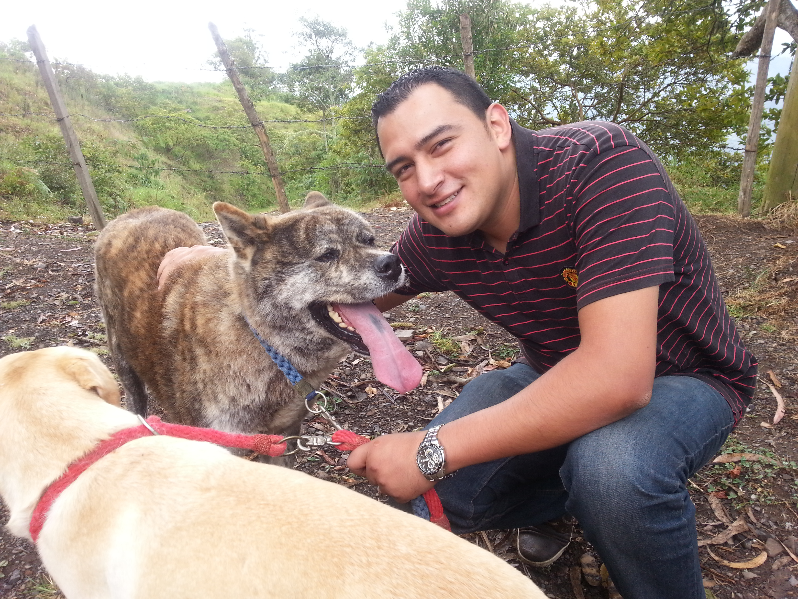

AUTOR

Nombe: Diego Felipe Perez Gomez
Codigo:80.249.493
Programa: Ingenieria de Sistemas
Correo electronico: dife23@gmail.com
Skype: Dife2323
NAVEGACION
TENDENCIAS
“Los ataques contra dispositivos móviles son una tendencia que se mantiene. Esto se explica por la popularidad de estos aparatos y gracias a esto los ciberdelincuentes encontraron una posibilidad de ataque ahí.
Otra de las amenazas que se mantienen es la propagación de botnet, que son piezas de software que convierten el dispositivo de la víctima en un equipo zombie: el atacante puede tomar control del dispositivo para robar información o para espiar lo que se hace con él. Cada vez vemos cómo este tipo de acciones se especializa más en los países de la región”
El Espectador


Otra de las amenazas que se mantienen es la propagación de botnet, que son piezas de software que convierten el dispositivo de la víctima en un equipo zombie: el atacante puede tomar control del dispositivo para robar información o para espiar lo que se hace con él. Cada vez vemos cómo este tipo de acciones se especializa más en los países de la región”
El Espectador